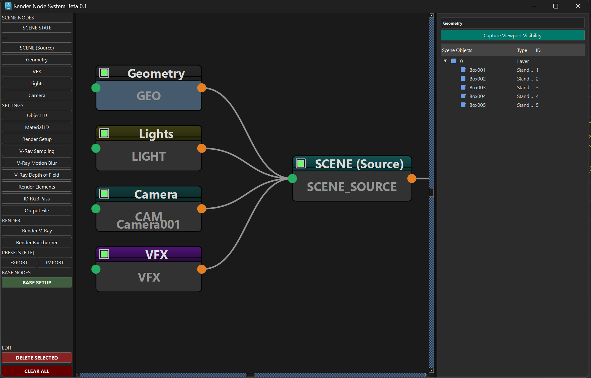

Input
Geometry
Captura objetos geométricos. Filtra por selección, capas o nombres específicos.
Documentación oficial del sistema de gestión nodal de escenas para 3ds Max y V-Ray.
Tutorial introductorio: Flujo de trabajo básico y gestión de nodos.
Captura objetos geométricos. Filtra por selección, capas o nombres específicos.
Administrador de iluminación. Recopila luces V-Ray y estándar.
Define la cámara activa para determinar el punto de vista del render.
Soporte para TyFlow y PhoenixFD. Asegura la carga de simulaciones.
El núcleo. Recibe conexiones y empaqueta la escena para el procesado.
Asigna IDs únicos automáticamente o por material/capa para máscaras.
Control de IDs a nivel de material para MultiMattes automáticos.
Genera pases RGB de color plano basados en IDs para máscaras visuales.
Configura AOVs globales: Diffuse, Reflection, y MultiMattes.
Configuración base: Resolución, Frame Buffer y parámetros globales de Max.
Control de calidad de imagen: Noise Threshold, Max Subdivs y AA filter.
Nodos específicos para activar y controlar el desenfoque de movimiento y campo.
Gestión de guardado: Rutas, nombre de archivo, formato (EXR/JPG) y canales.
Snapshot de la escena. Congela la configuración actual para enviarla a render.
Ejecución local. Lanza el render directamente en la máquina usando V-Ray.
Envío a granja. Prepara el job y lo envía al manager de Backburner.